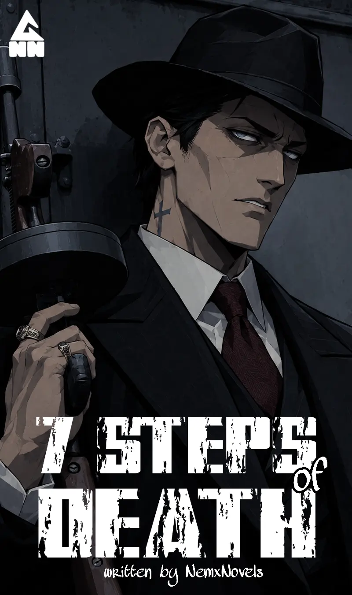
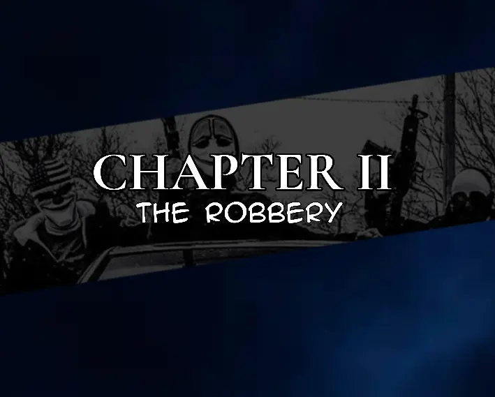

It was a peaceful night in Milesmars.
At least, it was peaceful if you were standing on the right street.
Milesmars was one of the suburbs where some of the richest people in Kingsmere lived. The houses were large enough to have names of their own, the lawns were trimmed with almost obsessive precision, and the streets were usually so quiet that the occasional passing car seemed louder than it should have been.
Of course, that silence depended entirely on where you stood.
Somewhere behind the walls of one house, music thumped faintly through an open window. A party was still going on several streets away. Laughter occasionally floated across the neighborhood before being swallowed by the darkness.
But on this particular street, there was almost nothing.
Four men were standing beside a thick hedge, staring across the road at one of the houses.
Most of its windows were dark.
Only one light was on.
The second floor.
"That's probably my girlfriend," Justin whispered.
Thomas glanced at the house, then at him.
"You're sure she's the only one home, right?"
"I am."
"You'd better be."
Charlie was standing beside Justin, his attention fixed on the magazine of the handgun in his hands. He checked the bullets one by one, the small metallic clicks sounding strangely loud in the quiet street.
Justin noticed.
"You're not going to use that, right?"
Charlie looked at the gun.
Then at Justin.
"Oh, no. I won't."
Justin stared at him.
Charlie slid the magazine back into place.
A brief silence followed.
"Hopefully."
Justin slowly turned his head toward him.
Charlie smiled.
"What?"
"Nothing."
From behind them came a quiet snort.
Justin looked over.
Philip was leaning against the hedge with his arms folded, staring at the house.
"I heard your girl is one of a kind."
The other three looked at him.
Philip continued.
"Ass packed like a backpack, jiggling like a boombox when you tap it, and nipples sharp enough to—"
He paused, apparently searching for the correct comparison.
"—stab somebody with the tip of a sword."
Nobody said anything.
Philip looked at their faces.
"What?"
Thomas rubbed his forehead.
Philip blinked.
"I'm not drunk."
Nobody answered.
"I'm totally okay."
Charlie slowly looked away.
Philip pointed at Justin.
"Anyway, if you ain't into her for the money, I'm sure it's that Justine—"
"Justin."
"Justin. Whatever."
There was another silence.
Justin sighed.
"Let me tell you a story about how I met my girlfriend. You might understand why I love her."
Charlie immediately shook his head.
"We are not going to sit here listening to you explain how you ripped her heart out of her chest while we drool over her family's money."
"I agree," Thomas said. "You should go, Justin."
Justin looked at both of them.
Then at Philip.
Philip gave him a thumbs-up.
Justin ignored him.
He slowly rose from behind the hedge, brushing a few leaves from his clothes. He looked across the street at the house.
For a moment, none of them moved.
Then Justin stepped onto the road.
His shoes made soft sounds against the pavement as he crossed toward the house.
The others remained behind the hedge, watching him.
Justin reached the front door.
He stopped.
Knocked.
Then waited.
For a second, nothing happened.
He glanced over his shoulder.
Across the street, three silhouettes were still crouched behind the hedge.
Charlie raised one hand.
Justin turned back toward the door.
A light switched on inside the entrance hall.
Justin immediately straightened.
He ran a hand through his hair, smoothing it into place. Then he looked down at his clothes and adjusted them, pulling at his shirt and brushing something invisible from his shoulder.
He took a breath.
The lock clicked.
The door opened.
Chelsea Stephenhood stood on the other side.
Justin's girlfriend.
The tired expression he'd been wearing disappeared almost instantly.
Chelsea smiled.
Justin smiled back.
She stepped forward and wrapped her arms around him.
He hugged her tightly.
Then they kissed at the doorway beneath the warm entrance light.
Across the street, three men watched from behind a bush.
For the moment, everything looked perfectly normal.
As the three men remained crouched behind the bush, watching the house, Philip suddenly spoke.
"What if Justin gets blamed for the stolen things?"
"Then that's even better for us," Charlie said.
Philip looked at him.
"Because I heard they can extract your sperm from the girl's oesophagus and find out who did it. Isn't that amazing?"
There was a brief silence.
Charlie slowly turned his head toward Philip.
"C'mon, Philip."
"What?"
"Where the hell do you get this shit?"
Thomas shook his head.
"Your alcohol addiction is not healthy, Philip."
"I'm just saying."
Philip raised both hands defensively.
"I'm just saying here. We all know Justin is into some kinky shit."
Charlie stared at him for another second before looking back toward the house.
"Man, let's just go in. I'm itching."
"Yeah," Thomas muttered. "I'm tired of Philip's shit too."
They had been sitting behind that bush long enough for the cold night air to settle into their clothes. Their legs were beginning to ache from crouching, and the longer they waited, the more ridiculous the whole operation started to feel.
Charlie pushed himself up first.
Thomas followed.
Philip took a moment longer, stretching one leg before standing.
"Quiet," Charlie whispered.
The three men lowered themselves again, this time moving forward.
They crouched like tigers.
Or at least they believed they did.
Their movements were careful and deliberate as they crossed the distance between the bush and the house, keeping low whenever they thought they might be visible through a window.
There was something almost cinematic about it.
Three masked men creeping toward a wealthy man's home in the middle of the night.
If somebody had been watching from a distance, they might have mistaken it for the beginning of a presidential assassination.
The only difference was that these three were looking for an office instead of a president.
They reached the front door.
Charlie tested the handle.
It opened.
He looked at the others.
Chelsea had left it unlocked after letting Justin inside.
Convenient.
Dangerously convenient.
They slipped through one after another.
The difference between outside and inside was immediate.
The cold night air disappeared behind them, replaced by the warm, still air of the house. Their shoes touched the polished floor almost silently, and for a moment none of them moved.
The entrance hall was bigger than some people's entire houses.
A large staircase curved upward ahead of them. Decorative lights cast a soft glow across the walls, catching on framed paintings and polished surfaces. Everything looked expensive enough that Philip probably wanted to steal half of it simply because it existed.
But they weren't here for furniture.
They were here for Chelsea's father's office.
And somewhere inside this enormous house, that office was waiting for them.
There was something almost poetic about the way they had entered.
People like to say that love is the doorway to an enemy's heart.
Of course, they usually mean it metaphorically.
These three men had discovered another interpretation.
Love could get you through the front door.
And once you were inside, you could use that opportunity to stab your enemy in the heart.
Not literally.
At least, not tonight.
This was one of those situations.
Justin's relationship with Chelsea had given them exactly what they needed: access.
The three musketeers were simply perfecting the technique.
Justin was somewhere inside the house keeping Chelsea occupied while his friends searched for her father's office.
Bedroom.
Bathroom.
Perhaps somewhere else entirely.
Wherever Justin had decided to keep her distracted, it was his problem now.
Their problem was finding the office before anybody realized what they were doing.
Charlie glanced down the hallway.
"Which way?"
Thomas pointed toward the left.
Philip pointed toward the right.
They looked at each other.
Charlie sighed.
"Fine. We split up."
The three moved deeper into the house.
Charlie disappeared down one corridor.
Thomas headed toward another.
Philip wandered in the opposite direction, his footsteps becoming quieter as the walls swallowed him.
They searched quickly but carefully, opening doors only far enough to look inside before moving on.
Guest rooms.
Studies.
Storage rooms.
A library.
Nothing.
Every room seemed to lead to another corridor, and every corridor seemed to lead somewhere else.
The house was beginning to feel less like a home and more like a maze built for people with too much money.
But somewhere inside that maze was Chelsea's father's office.
And the three men were going to find it.
Philip was the first to find the office.
He pushed the door open slowly and slipped inside.
The room was, disappointingly, normal.
There was a large wooden desk near the center, a thick carpet beneath it, several shelves packed with books, and the sort of expensive furniture that looked as though nobody was actually allowed to sit on it.
The walls were decorated with animal heads.
Deer.
A wild boar.
Something with horns that Philip couldn't identify and didn't particularly care to.
There were framed paintings between them, along with a few old photographs and other decorations that seemed to exist solely to remind visitors that the owner had money and questionable hobbies.
Philip looked around.
He was expecting something else.
A hidden chamber.
A wall that opened.
A safe disguised as a painting.
Perhaps even a human face floating inside a glass jar.
He had hoped for that last one.
Not because he wanted to see it.
Simply because it would have made the night much more interesting.
Unfortunately, there was no face in a jar.
If you were a good-hearted person, you might have been relieved by this.
Philip was disappointed.
He walked toward the bookshelf.
His eyes moved across the rows of books.
Then his hand reached out.
He pulled one free.
Nothing happened.
He pushed it back.
Pulled another.
Still nothing.
By the time Charlie and Thomas found him, Philip had already removed several books from the shelf and was examining the gaps behind them.
Thomas stopped in the doorway.
"What are you doing?"
Philip didn't even turn around.
"I'm trying to find a secret door."
He said it with complete seriousness.
There was no joke in his voice.
No hint that he was pretending.
His game face was on.
Philip had apparently decided that tonight he was no longer an alcoholic man hiding behind a bush.
Tonight, he was a professional treasure hunter.
A man of mystery.
A man who knew that wealthy people never simply owned offices.
They owned offices containing secret rooms.
"Oh," Thomas said.
He looked at Charlie.
Then back at Philip.
"So you're trying to find a secret room."
"Yes."
"How nice."
Philip nodded.
"Very nice."
"No need to compliment me, Tom."
Thomas stared at him.
"I wasn't."
Philip ignored him and pulled another book from the shelf.
He inspected the spine.
Then the wall behind it.
Nothing.
Charlie wandered farther into the room, looking around.
His eyes eventually landed on the opposite wall.
He pointed.
"Isn't that the secret door?"
Philip stopped.
Charlie was pointing at an actual door.
It was large, wooden, and completely visible.
There was even a handle.
Philip stared at it.
Then at Charlie.
"Oh, that's not a secret door, Charlie."
Charlie raised an eyebrow.
"It's just a normal door."
Philip returned to the bookshelf.
He pulled out another book.
Charlie looked at Thomas.
Thomas looked at Charlie.
Neither said anything.
There are moments in life when arguing with a person becomes less productive than simply allowing them to discover their own mistake.
This was one of those moments.
Charlie walked toward the perfectly ordinary door.
Thomas followed.
Behind them, Philip continued his investigation, pulling another book from the shelf with the seriousness of a detective uncovering a government conspiracy.
Charlie reached for the handle.
He opened the door.
And Philip remained completely unaware of what the other two were about to find.
Several minutes passed before the three men emerged from the office.
They did not come out the way they had entered.
The bookshelves had been moved.
Behind them was a narrow opening in the wall, and beyond it was a staircase descending into darkness.
For a few seconds, nobody spoke.
Charlie looked down.
Then he looked at Thomas.
Then at Philip.
Philip's expression said exactly what it needed to say.
I told you.
The staircase was narrow, with rough walls on either side. There were no electric lights.
Instead, candles had been placed along the walls at irregular intervals.
Their flames trembled whenever the three men moved past them, throwing long shadows across the stone.
Charlie took the first step.
The stairs creaked beneath his weight.
Then another.
The deeper they went, the colder the air became.
The smell changed too.
The clean, expensive scent of the house disappeared, replaced by something damp and metallic.
Charlie stopped.
There were dark stains on the wall.
He moved closer.
They weren't stains.
They were handprints.
Some were old and faded.
Others looked disturbingly fresh.
Thomas noticed them too.
"Jesus."
Philip ran his fingers over the wall without touching it.
Further down, somebody had scratched words into the stone.
HELP ME.
A few steps later:
PLEASE.
Then another message, almost completely hidden beneath a smear of something dark.
DON'T LET HIM—
The rest was gone.
Nobody joked for a moment.
Even Philip was quiet.
The candles continued to flicker.
Their shadows moved across the walls as though somebody else were walking beside them.
Eventually, the staircase opened into a large room.
Charlie stepped off the final stair.
He looked around.
The room was enormous.
It wasn't an office basement.
It wasn't a storage room.
It wasn't even a basement in the ordinary sense.
It was a man cave.
Then Charlie looked again.
No.
It was a dungeon.
Leather clothing hung from the walls beside an assortment of weapons, arranged almost neatly, as though somebody had taken the time to turn their private collection into a museum.
There were beds.
Several of them.
There were strange pieces of furniture that were impossible to explain without making assumptions nobody particularly wanted to make.
The whole place had been designed with an uncomfortable mixture of luxury and cruelty.
It was the sort of room that answered questions nobody had asked.
Philip slowly turned around.
His eyes widened.
"Voilà."
He spread his arms.
"What did I tell you guys?"
Thomas stared at him.
"A secret room."
"I heard many people have ones."
Charlie didn't answer.
He couldn't.
For once, Philip's discovery had actually left him speechless.
Charlie looked toward the center of the room.
Something was hanging there.
A metal frame.
A leather strap.
A collection of restraints.
He looked down.
His shoe was standing in a dark puddle.
Charlie lifted his foot.
The substance stretched slightly before separating from the sole.
He frowned.
He touched the bottom of his shoe against the floor again.
It was too thick.
Too sticky.
It wasn't water.
Charlie looked at the substance for a moment.
Then at the room.
"Well."
He swallowed.
"We found a BDSM dungeon."
Philip nodded thoughtfully.
"Is this the thing we all came for?"
Charlie looked at him.
Philip continued.
"'Cause I hope we're not here to drill Chelsea."
Thomas immediately turned toward him.
"C'mon, Philip. Man, what's wrong with you?"
Philip shrugged.
"A lot is wrong with me, Tom."
He walked farther into the room.
Whatever discomfort the dungeon had caused him, curiosity was already winning.
His eyes moved across the walls.
Across the furniture.
Across the strange collection of objects.
Then he noticed a cardboard box sitting against the wall.
Philip walked toward it.
He crouched.
Opened it.
Inside was a metal pot.
And inside the pot—
Coins.
Dozens of them.
Philip froze.
His mouth slowly opened.
He reached inside and lifted one of the coins between his fingers.
He turned it toward the candlelight.
Gold.
Real gold.
Philip's entire expression changed.
"Merry Christmas."
Charlie looked over.
Philip held the coin up like a holy relic.
"Thou hast bestowed upon me more than just beer."
Charlie stared at him.
"Philip, are you okay?"
"No."
Philip smiled.
"I just found gold coins, ladies."
Thomas and Charlie immediately moved closer.
The three of them gathered around the cardboard box.
For the first time that night, none of them were thinking about Chelsea.
None of them were thinking about the office.
And none of them were thinking about the strange messages carved into the walls.
They were staring at the coins.
Because sometimes the most dangerous thing you can find in a hidden room isn't the thing that scares you.
It's the thing that makes you want to stay.
"You really did it. Again."
Charlie stared at Philip with a mixture of disbelief and reluctant admiration.
"This is why I still bring you along," Thomas said.
Philip grinned.
"Because I'm smart."
Thomas opened his mouth.
Paused.
Looked at Philip.
"Because you..."
He seemed to reconsider whatever insult had originally been forming in his head.
"...smart. Yeah."
Philip nodded proudly, apparently accepting the compliment.
Charlie had already moved toward the pot of coins.
"Let's bag it and leave. I've already stepped on enough babies to make me feel like I'm going to hell."
He crouched beside the coins and began stuffing them into his bag.
Thomas followed.
Philip followed.
The coins clinked against one another as they disappeared into the bags, the metallic sound echoing strangely through the dungeon.
They left a few behind.
Not because they had suddenly developed morals.
There simply wasn't enough room.
And besides, they had already collected enough to make the bags heavier than any of them had expected.
Charlie lifted his bag.
His shoulder immediately dropped under the weight.
"Jesus."
Thomas grabbed his own.
"These things are heavy."
Philip lifted his.
"Gold usually is."
Nobody asked how he knew that.
They headed back toward the staircase.
Charlie was the first to start climbing.
"Come on. Come on."
He kept looking back at the others as though he expected the basement itself to suddenly grow legs and chase them.
They climbed the stairs, passed the bloody handprints, passed the desperate messages carved into the walls, and finally reached the office.
Justin was just entering the room.
Thomas tossed him his bag.
Justin caught it against his chest.
The weight nearly pulled his arms down.
"Wow."
He looked inside.
"That's a lot of gold coins."
He shifted the bag.
"It's kind of heavy to carry."
Thomas gave him a tired look.
"Well, the heavier it is, the heavier your money will be."
Justin considered that.
"Fair enough."
Charlie wasn't interested in philosophy anymore.
He was already heading toward the door.
"Let's move."
He walked quickly through the office, then through the house, clearly trying to put as much distance as possible between himself and the dungeon.
The others followed.
A few moments later, the four men were outside.
The cold night air hit them again.
They stood on the pavement.
Their bags hung from their shoulders.
The gold inside them made every movement produce a faint metallic clink.
And then Thomas stopped.
Charlie stopped.
Justin stopped.
Philip stopped.
There was one small problem.
They had no car.
They stood beneath the streetlights in complete silence.
The expensive houses around them remained peacefully asleep.
The bags containing stolen gold were suddenly much less exciting.
Philip slowly looked around.
"I really forgot about the car."
Charlie closed his eyes.
He took a long breath through his nose.
"Yeah."
He looked at Philip.
"I don't blame you on that."
Philip smiled.
Charlie continued.
"I thought we'd be carrying paper."
He looked down at the heavy bag hanging from his shoulder.
"Turns out Judas really meant gold coins."
Philip looked at him.
"The irony, right?"
Thomas said nothing.
Absolutely nothing.
He simply stood there, staring into the darkness with the expression of a man trying very hard not to murder the person standing beside him.
The three of them had successfully broken into a rich man's house, discovered a hidden dungeon, stolen bags of gold, escaped the building—
and forgotten how they were supposed to get home.
A remarkable achievement.
For criminals, they were beginning to demonstrate a rather concerning relationship with basic planning.
"Oh, there's a car."
Justin pointed down the street.
"We can just take it."
A white van was approaching from the other side of the road.
It had no windows along the back.
Just a large, plain white body moving quietly through the sleeping neighborhood.
It slowed as it approached the traffic light.
Then stopped.
The four men looked at one another.
Nobody questioned the plan.
Perhaps that was the problem.
They ran.
Thomas reached the van first.
The traffic light changed.
The driver began to move.
Thomas pulled out his gun and stepped directly in front of the van.
The vehicle stopped with a sharp jerk.
Thomas yanked open the driver's door.
"Get out."
The driver barely had time to understand what was happening before Thomas pulled him from his seat.
Charlie was already behind him.
"Tie him up."
Charlie grabbed the driver and forced him down.
The man struggled, but Charlie was faster.
Within seconds, his hands and legs were tied, and a strip of dark tape covered his mouth.
Justin arrived moments later.
"Where do we put him?"
"The back."
Justin and Charlie grabbed the driver and lifted him together.
They opened the rear doors.
Inside were several cardboard boxes stacked against the walls.
Neither of them bothered to look closely.
They had bigger problems.
They shoved the driver inside and moved back toward the front.
Thomas looked around.
"Where's Philip?"
Charlie looked behind him.
There was no Philip.
For one horrible second, none of them spoke.
Then Charlie spotted him.
Philip was standing several metres behind them.
He was crouched on the pavement.
Picking something up.
Charlie stared.
"He's picking up the coins."
Philip had apparently dropped his bag during the sprint.
Gold coins were scattered across the road, catching the streetlight every time he moved.
"Of course he did," Charlie muttered.
Justin climbed into the back.
"Just reverse. I'll help him out."
Charlie got into the passenger seat.
Thomas climbed behind the wheel.
The engine came alive.
The van rolled backward toward Philip.
Philip was still collecting coins.
One.
Two.
Three.
He picked up another and shoved it into his bag.
Justin leaned out of the rear doors.
"Philip!"
Philip looked up.
"What?"
"Get in!"
Philip grabbed the last coin he could reach and ran toward the van.
He threw the bag inside.
Justin caught it.
Philip climbed in after it.
Justin stared at him.
"How did you happen to drop your entire bag?"
Philip looked offended.
"Respect your elders, you cock."
Justin laughed.
He pulled the rear doors shut.
At the front, Thomas pressed his foot down.
The van accelerated into the empty street.
For a few moments, nobody said anything.
The cardboard boxes shifted slightly as the van turned.
He glanced at them.
Then looked away.
Nobody cared.
They had stolen a fortune in gold.
They had escaped a secret dungeon.
They had hijacked a van.
At this point, curiosity had become an unnecessary luxury.
The van disappeared into the night.
And inside it sat four men who had just become considerably richer, considerably
more criminal, and considerably less concerned about what they had actually stolen.
The boxes remained unopened.
Then Charlie looked toward the back.
At the Kingsbat Saloon, the night was still very much alive.
A collection of motorcycles covered the pavement outside the building. Big ones, small ones, polished ones, battered ones, machines that looked as though their owners cared for them more than they cared for themselves.
The noise coming from inside was something else entirely.
Music.
Laughter.
Glasses knocking against tables.
Men shouting over one another.
Women laughing just as loudly.
Someone was singing badly in the corner, and someone else was encouraging him to sing even louder.
Every now and then, the sharp crack of a gunshot joined the music.
Nobody seemed particularly concerned.
At Kingsbat, people occasionally shot each other for fun.
It was the sort of place where a man could lose a tooth during an argument and receive a drink from the person who knocked it out five minutes later.
It was almost like a Viking feast.
Except the Vikings had probably been more civilized.
And there were certainly fewer motorcycles.
Alex was right in the middle of it.
She was part of the Hellhounds pack.
More importantly, she owned the place.
Around her were cheers, raised glasses, smiles, arguments and conversations that seemed to appear from nowhere.
Someone would walk up to her and start talking.
Then another person would join.
Then another.
Before long, Alex would find herself standing in the middle of an entirely new conversation, surrounded by people she knew and people she barely remembered meeting.
That was what she loved about Kingsbat.
Nobody there seemed to care who she was supposed to be.
Nobody needed her to behave like a respectable woman.
Nobody expected her to sit quietly in a corner and pretend the world was orderly.
She could laugh.
She could drink.
She could shout.
She could disappear into the noise.
The chaos made her feel alive.
And strangely enough, it also made her feel closer to death.
That was where she belonged.
Some people searched their entire lives for peace.
Alex preferred the sound of a room that could erupt into violence at any second.
Unfortunately, her night was coming to an end.
She had drunk enough that the floor had begun to feel slightly less trustworthy than usual, and even she knew when it was time to stop.
Alex stepped outside.
The cooler air hit her face.
She stood on the pavement for a moment, letting the noise of Kingsbat fade behind the closed doors.
Then she pulled out her phone.
She called her driver.
"Kassie, where the fuck are you? You're supposed to be here."
A man's voice answered.
"It's Max, ma'am. Last time I spoke to Kassie, she was at the gas station."
Alex stared at the phone.
"Max?"
"Yes, ma'am."
She pulled the phone slightly away from her ear.
"Why the hell are you answering Kassie's phone?"
There was a brief silence.
"I don't know, ma'am."
Alex sighed.
"Whatever."
She ended the call.
She looked at the screen again and immediately made another call.
It barely rang.
"I'm on my way, ma'am."
The call ended before Alex could respond.
She lowered the phone.
"Fucking wonderful."
She slipped it back into her pocket and looked around.
Kingsbat was still roaring behind her.
The street outside was considerably quieter.
Alex stood there for a moment, waiting.
Then something caught her attention.
Across the street, a car had stopped.
The door opened.
Calson stepped out of Raymond's car.
Alex's expression changed.
She started walking.
Straight across the street.
She didn't look left.
She didn't look right.
Apparently, being drunk had not improved her relationship with traffic.
But Alex wasn't looking at the road anymore.
She was looking at Calson.
Meanwhile, inside the van, things had gone considerably worse.
The driver had not accepted his kidnapping with the dignity of a man who understood that his evening was simply having an unfortunate turn.
He had been tied up.
Thrown into the back of his own van.
Gagged.
And left surrounded by four criminals who were now discussing their stolen gold as though they had won a lottery.
Apparently, he had decided that was enough.
Justin was standing near the rear doors when the driver suddenly moved.
His legs came up with surprising force.
The kick caught Justin squarely.
"Fuck!"
Justin stumbled backward.
For half a second, he managed to stay upright.
Then the rear doors swung open.
Justin disappeared through them.
His body hit the road head first.
The sound of the impact was enough to make Charlie turn around.
"What the—"
The van continued moving.
Justin rolled across the pavement behind them before coming to a stop.
Inside the van, nobody had time to process what had just happened.
Well—
almost nobody.
Philip was asleep.
He was curled around his bag of gold like a man protecting his newborn child, his arms wrapped tightly around it.
His mouth was slightly open.
He was snoring.
The van jolted over a bump.
Philip's head rolled sideways.
He didn't wake up.
Charlie looked toward the rear doors.
They were wide open.
Then he looked at the driver.
The rope around the man's hands was gone.
Charlie's hand immediately went for his gun.
The driver lunged.
Charlie raised the weapon.
"Philip!"
Nothing.
Philip continued sleeping.
"Philip!"
A loud snore answered him.
Thomas glanced into the rear-view mirror.
"What the fuck is happening back there?"
"For fuck's sake!"
Charlie tried to bring the gun up, but the driver slammed into him before he could aim properly.
The two crashed against the side of the van.
Charlie grabbed the driver's shirt.
The driver swung his head forward.
Charlie barely moved in time.
The blow clipped his face.
"Get off me!"
The driver twisted violently, trying to reach the front of the van.
Charlie wrapped an arm around him and pulled him backward.
The gun slipped from Charlie's grip and clattered across the floor.
Thomas kept both hands on the steering wheel.
"Charlie!"
"I've got him!"
"You clearly don't!"
The driver shoved Charlie against the wall.
Charlie grabbed his wrist.
They wrestled in the narrow space between the boxes, boots scraping against the floor while the van swerved beneath them.
Philip slept through everything.
His arms remained wrapped around the gold.
Thomas glanced at the rear-view mirror again.
"Wake Philip!"
"I'M TRYING!"
Charlie looked toward the sleeping man.
"Philip!"
Nothing.
"PHILIP!"
Philip snored.
Charlie stared at him in disbelief.
"How the fuck is he still asleep?"
The driver suddenly slammed Charlie against the wall again.
Charlie grunted.
"Forget Philip!"
He grabbed the driver's arm with both hands and wrestled him back toward the floor.
The van continued racing down the road.
Justin was somewhere behind them.
Their getaway driver was fighting for his life.
Their gold was rolling around the back of the van.
And Philip was sleeping peacefully with his fortune in his arms.
It was, in many ways, the most organized disaster they had experienced that night.
"Evening, ma'am."
Calson walked around to the right side of the car and opened the passenger door for Alex.
"Thanks for picking me up."
Alex reached for the door.
Her phone rang.
She stopped.
She looked at the screen.
Then answered.
"Hello?"
"Hey, Alex. My queen."
Alex frowned.
"I was checking up on you."
She pulled the phone slightly away from her ear.
"Who are you?"
There was a brief silence.
"I'm your boyfriend, Alex."
The man laughed.
"Are you drunk or something?"
Alex stared at the phone.
Then at Calson.
Then back at the phone.
"Eww."
She sounded genuinely offended.
"I don't have a boyfriend."
She paused.
"If I did, I'd know, don't you think?"
Before the man could answer, Alex threw the phone into the street.
It landed somewhere behind her with a sharp crack.
Calson stared at her.
Alex opened the car door.
"Move."
She pushed him aside.
"I want a drink."
Calson stepped backward.
One foot landed on the road.
Then the other.
He barely had time to turn his head.
A white van came around the corner.
Its headlights swept across him.
The horn blared.
Then—
CRASH.
The impact sent Calson flying.
Blood splashed across Alex's face.
She froze.
For a moment, the world seemed to stop.
The noise from Kingsbat continued behind her, completely unaware of what had just happened.
Alex slowly touched her cheek.
Her fingers came away red.
She looked at them.
Then looked toward the road.
Calson was lying motionless on the pavement.
"Calson?"
She stepped closer.
"Calson?"
Nothing.
She crouched slightly.
"Are you okay?"
Calson was, unfortunately, not okay.
He wasn't moving.
He wasn't breathing.
He had reached the unfortunate point in an evening where the question "Are you okay?" had become more of a social courtesy than a realistic possibility.
Alex stared at him.
Then she looked at the blood on her hand.
Something about the sight seemed to amuse her.
"I think I'm becoming the man I wanted to marry."
She stood.
Then, as casually as if she had simply dropped her drink, Alex crossed the street and walked back into Kingsbat.
Inside, the music was still playing.
People were still shouting.
Someone was laughing at a table.
Nobody seemed to notice that their owner had just walked back inside with somebody else's blood on her face.
Alex looked around.
"Marty."
She spotted him.
"Marty!"
He turned.
Alex walked toward him.
Then grabbed him.
"Come on."
"Alex, what—"
She started dragging him toward the door.
"Marty, I want you to clean all of this."
She pointed toward the street.
"Calson."
Marty looked outside.
His expression changed.
"Remove him from here."
Alex pointed again.
"Remove him from the ground. Remove him from everywhere."
Marty stared at her.
Alex's voice became slightly more serious.
"I don't want you dying like him."
She looked toward the road again.
"Ray's Calson."
Meanwhile, the van had become a completely different kind of disaster.
Philip had somehow ended up sprawled across the top of one of the cars after the chaos.
The driver was still alive.
More importantly, he was still determined to get his van back.
He climbed out of the driver's side, yanked the door open, and shoved Thomas out.
Thomas hit the ground hard.
He was barely conscious.
The driver climbed back inside.
The engine roared.
The van pulled away.
Thomas lay on the pavement, blinking through the blur in his vision.
The last thing he saw before everything became hazy was Alex standing across the street.
She looked down at him.
Then tilted her head.
"This one is cute."
She pointed toward Thomas.
"Put him in the car."
Marty and the others moved toward him.
Thomas barely had enough strength to react before they lifted him from the ground.
His vision faded as they carried him toward Raymond's car.
And just like that, Thomas Pembroke went from being a man committing a robbery to being an unexpected passenger in somebody else's night.
.png)
.png)
.png)
.png)